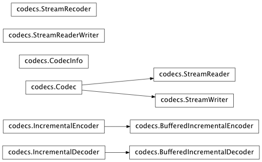

Sphinx Cheat Sheet¶
Wherein I show by example how to do some things in Sphinx (you can see a literal version of this file below in This file)
Making a list¶
It is easy to make lists in rest
Making a table¶
This shows you how to make a table – if you only want to make a list see Making a list.
| Name | Age |
|---|---|
| John D Hunter | 40 |
| Cast of Thousands | 41 |
| And Still More | 42 |
Making links¶
Cross-references sections and documents¶
Use reST labels to cross-reference sections and other documents. The mechanism for referencing another reST document or a subsection in any document, including within a document are identical. Place a reference label above the section heading, like this:
.. _sphinx_helpers:
====================
Sphinx Cheat Sheet
====================
Note the blank line between the reference label and the section heading is important!
Then refer to the reference label in another document like this:
:ref:`sphinx_helpers`
The reference is replaced with the section title when Sphinx builds the document while maintaining the linking mechanism. For example, the above reference will appear as Sphinx Cheat Sheet. As the documentation grows there are many references to keep track of.
For documents, please use a reference label that matches the file name. For sections, please try and make the refence label something meaningful and try to keep abbreviations limited. Along these lines, we are using underscores for multiple-word reference labels instead of hyphens.
Sphinx documentation on Cross-referencing arbitrary locations has more details.
External links¶
For external links you are likely to use only once, simple include the like in the text. This link to google was made like this:
`google <http://www.google.com>`_
For external links you will reference frequently, we have created a
links_names.txt file. These links can then be used throughout the
documentation. Links in the links_names.txt file are created
using the reST reference
syntax:
.. _targetname: http://www.external_website.org
To refer to the reference in a separate reST file, include the
links_names.txt file and refer to the link through it’s target
name. For example, put this include at the bottom of your reST
document:
.. include:: ../links_names.txt
and refer to the hyperlink target:
blah blah blah targetname_ more blah
ipython sessions¶
Michael Droettboom contributed a sphinx extension which does pygments syntax highlighting on ipython sessions
In [69]: lines = plot([1,2,3])
In [70]: setp(lines)
alpha: float
animated: [True | False]
antialiased or aa: [True | False]
...snip
This support is included in this template, but will also be included in a future version of Pygments by default.
Formatting text¶
You use inline markup to make text italics, bold, or monotype.
You can represent code blocks fairly easily:
import numpy as np
x = np.random.rand(12)
Or literally include code:
# emacs: -*- mode: python; py-indent-offset: 4; indent-tabs-mode: nil -*-
# vi: set ft=python sts=4 ts=4 sw=4 et:
import matplotlib.pyplot as plt
plt.plot([1,2,3], [4,5,6])
plt.ylabel('some more numbers')
Using math¶
In sphinx you can include inline math \(x\leftarrow y\ x\forall y\ x-y\) or display math
This documentation framework includes a Sphinx extension,
sphinxext/mathmpl.py, that uses matplotlib to render math
equations when generating HTML, and LaTeX itself when generating a
PDF. This can be useful on systems that have matplotlib, but not
LaTeX, installed. To use it, add mathpng to the list of
extensions in conf.py.
Current SVN versions of Sphinx now include built-in support for math. There are two flavors:
- pngmath: uses dvipng to render the equation
- jsmath: renders the math in the browser using Javascript
To use these extensions instead, add sphinx.ext.pngmath or
sphinx.ext.jsmath to the list of extensions in conf.py.
All three of these options for math are designed to behave in the same way.
Inserting matplotlib plots¶
Inserting automatically-generated plots is easy. Simply put the script to
generate the plot in any directory you want, and refer to it using the plot
directive. All paths are considered relative to the top-level of the
documentation tree. To include the source code for the plot in the document,
pass the include-source parameter:
.. plot:: devel/guidelines/elegant.py
:include-source:
In the HTML version of the document, the plot includes links to the original source code, a high-resolution PNG and a PDF. In the PDF version of the document, the plot is included as a scalable PDF.
# emacs: -*- mode: python; py-indent-offset: 4; indent-tabs-mode: nil -*-
# vi: set ft=python sts=4 ts=4 sw=4 et:
import matplotlib.pyplot as plt
plt.plot([1,2,3], [4,5,6])
plt.ylabel('some more numbers')
(Source code, png, hires.png, pdf)
{kind=link}
{kind=link}
Inheritance diagrams¶
Inheritance diagrams can be inserted directly into the document by
providing a list of class or module names to the
inheritance-diagram directive.
For example:
.. inheritance-diagram:: codecs
produces:
This file¶
.. _sphinx_helpers:
====================
Sphinx Cheat Sheet
====================
Wherein I show by example how to do some things in Sphinx (you can see
a literal version of this file below in :ref:`sphinx_literal`)
.. _making_a_list:
Making a list
-------------
It is easy to make lists in rest
Bullet points
^^^^^^^^^^^^^
This is a subsection making bullet points
* point A
* point B
* point C
Enumerated points
^^^^^^^^^^^^^^^^^
This is a subsection making numbered points
#. point A
#. point B
#. point C
.. _making_a_table:
Making a table
--------------
This shows you how to make a table -- if you only want to make a list
see :ref:`making_a_list`.
================== ============
Name Age
================== ============
John D Hunter 40
Cast of Thousands 41
And Still More 42
================== ============
.. _making_links:
Making links
------------
Cross-references sections and documents
^^^^^^^^^^^^^^^^^^^^^^^^^^^^^^^^^^^^^^^
Use reST labels to cross-reference sections and other documents. The
mechanism for referencing another reST document or a subsection in any
document, including within a document are identical. Place a
*reference label* above the section heading, like this::
.. _sphinx_helpers:
====================
Sphinx Cheat Sheet
====================
Note the blank line between the *reference label* and the section
heading is important!
Then refer to the *reference label* in another
document like this::
:ref:`sphinx_helpers`
The reference is replaced with the section title when Sphinx builds
the document while maintaining the linking mechanism. For example,
the above reference will appear as :ref:`sphinx_helpers`. As the
documentation grows there are many references to keep track of.
For documents, please use a *reference label* that matches the file
name. For sections, please try and make the *refence label* something
meaningful and try to keep abbreviations limited. Along these lines,
we are using *underscores* for multiple-word *reference labels*
instead of hyphens.
Sphinx documentation on `Cross-referencing arbitrary locations
<http://sphinx.pocoo.org/markup/inline.html#cross-referencing-arbitrary-locations>`_
has more details.
External links
^^^^^^^^^^^^^^
For external links you are likely to use only once, simple include the
like in the text. This link to `google <http://www.google.com>`_ was
made like this::
`google <http://www.google.com>`_
For external links you will reference frequently, we have created a
``links_names.txt`` file. These links can then be used throughout the
documentation. Links in the ``links_names.txt`` file are created
using the `reST reference
<http://docutils.sourceforge.net/docs/user/rst/quickref.html#hyperlink-targets>`_
syntax::
.. _targetname: http://www.external_website.org
To refer to the reference in a separate reST file, include the
``links_names.txt`` file and refer to the link through it's target
name. For example, put this include at the bottom of your reST
document::
.. include:: ../links_names.txt
and refer to the hyperlink target::
blah blah blah targetname_ more blah
Links to classes, modules and functions
^^^^^^^^^^^^^^^^^^^^^^^^^^^^^^^^^^^^^^^
You can also reference classes, modules, functions, etc that are
documented using the sphinx `autodoc
<http://sphinx.pocoo.org/ext/autodoc.html>`_ facilites. For example,
see the module :mod:`matplotlib.backend_bases` documentation, or the
class :class:`~matplotlib.backend_bases.LocationEvent`, or the method
:meth:`~matplotlib.backend_bases.FigureCanvasBase.mpl_connect`.
.. _ipython_highlighting:
ipython sessions
----------------
Michael Droettboom contributed a sphinx extension which does pygments
syntax highlighting on ipython sessions
.. sourcecode:: ipython
In [69]: lines = plot([1,2,3])
In [70]: setp(lines)
alpha: float
animated: [True | False]
antialiased or aa: [True | False]
...snip
This support is included in this template, but will also be included
in a future version of Pygments by default.
.. _formatting_text:
Formatting text
---------------
You use inline markup to make text *italics*, **bold**, or ``monotype``.
You can represent code blocks fairly easily::
import numpy as np
x = np.random.rand(12)
Or literally include code:
.. literalinclude:: elegant.py
.. _using_math:
Using math
----------
In sphinx you can include inline math :math:`x\leftarrow y\ x\forall
y\ x-y` or display math
.. math::
W^{3\beta}_{\delta_1 \rho_1 \sigma_2} = U^{3\beta}_{\delta_1 \rho_1} + \frac{1}{8 \pi 2} \int^{\alpha_2}_{\alpha_2} d \alpha^\prime_2 \left[\frac{ U^{2\beta}_{\delta_1 \rho_1} - \alpha^\prime_2U^{1\beta}_{\rho_1 \sigma_2} }{U^{0\beta}_{\rho_1 \sigma_2}}\right]
This documentation framework includes a Sphinx extension,
:file:`sphinxext/mathmpl.py`, that uses matplotlib to render math
equations when generating HTML, and LaTeX itself when generating a
PDF. This can be useful on systems that have matplotlib, but not
LaTeX, installed. To use it, add ``mathpng`` to the list of
extensions in :file:`conf.py`.
Current SVN versions of Sphinx now include built-in support for math.
There are two flavors:
- pngmath: uses dvipng to render the equation
- jsmath: renders the math in the browser using Javascript
To use these extensions instead, add ``sphinx.ext.pngmath`` or
``sphinx.ext.jsmath`` to the list of extensions in :file:`conf.py`.
All three of these options for math are designed to behave in the same
way.
Inserting matplotlib plots
--------------------------
Inserting automatically-generated plots is easy. Simply put the script to
generate the plot in any directory you want, and refer to it using the ``plot``
directive. All paths are considered relative to the top-level of the
documentation tree. To include the source code for the plot in the document,
pass the ``include-source`` parameter::
.. plot:: devel/guidelines/elegant.py
:include-source:
In the HTML version of the document, the plot includes links to the
original source code, a high-resolution PNG and a PDF. In the PDF
version of the document, the plot is included as a scalable PDF.
.. plot:: devel/guidelines/elegant.py
:include-source:
Emacs helpers
-------------
See :ref:`rst_emacs`
Inheritance diagrams
--------------------
Inheritance diagrams can be inserted directly into the document by
providing a list of class or module names to the
``inheritance-diagram`` directive.
For example::
.. inheritance-diagram:: codecs
produces:
.. inheritance-diagram:: codecs
.. _sphinx_literal:
This file
---------
.. literalinclude:: sphinx_helpers.rst